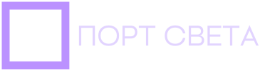
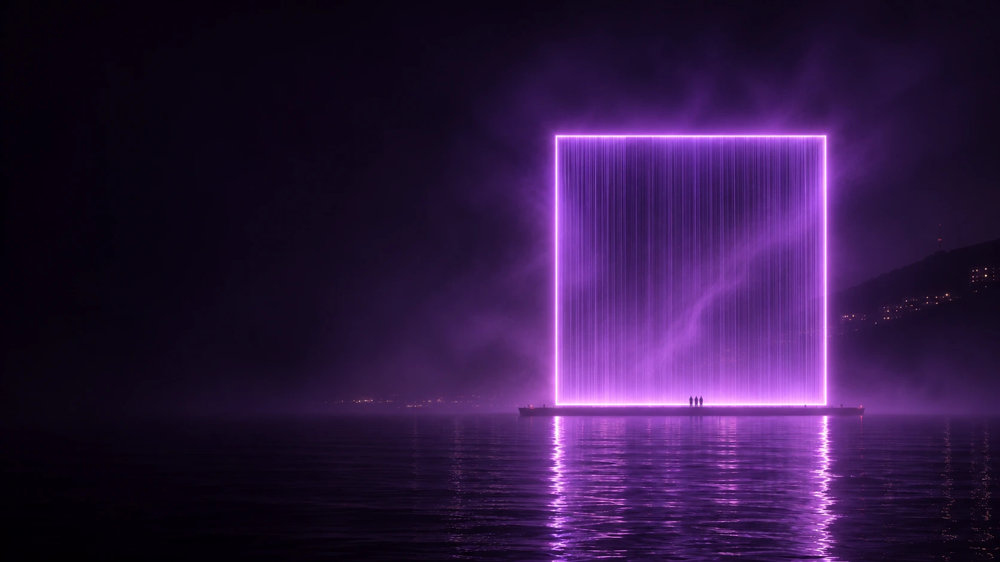
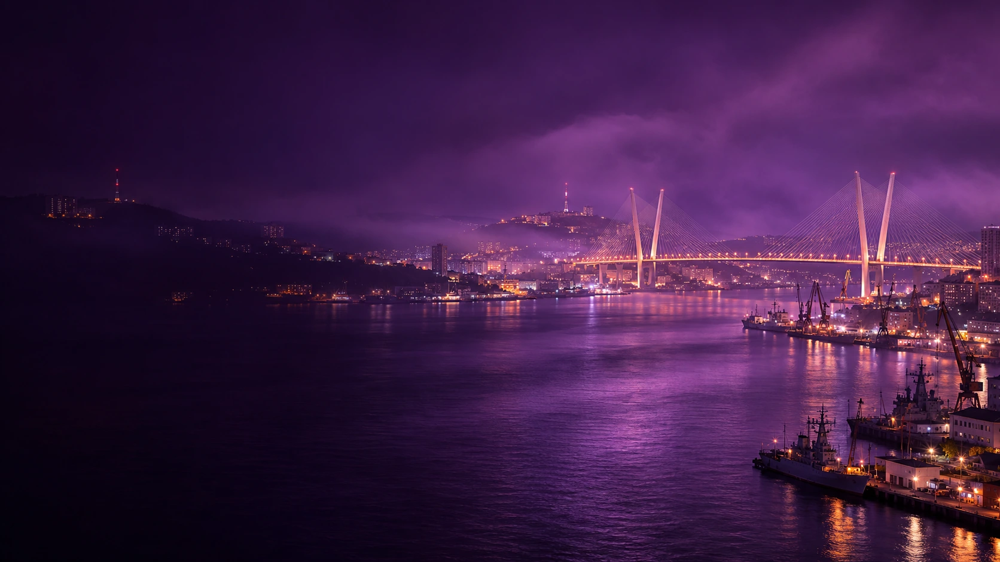
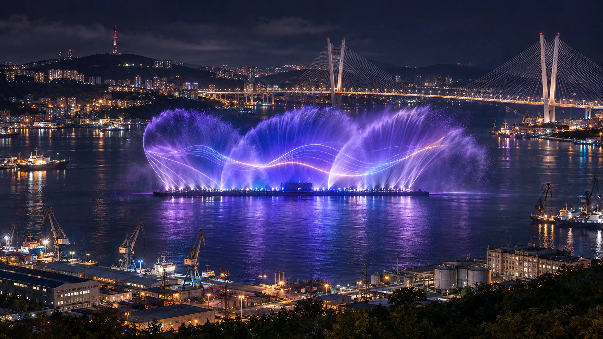
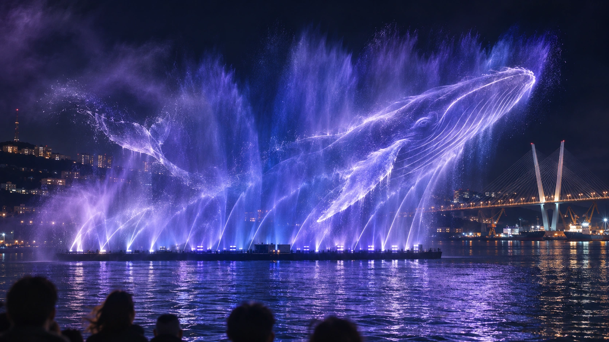
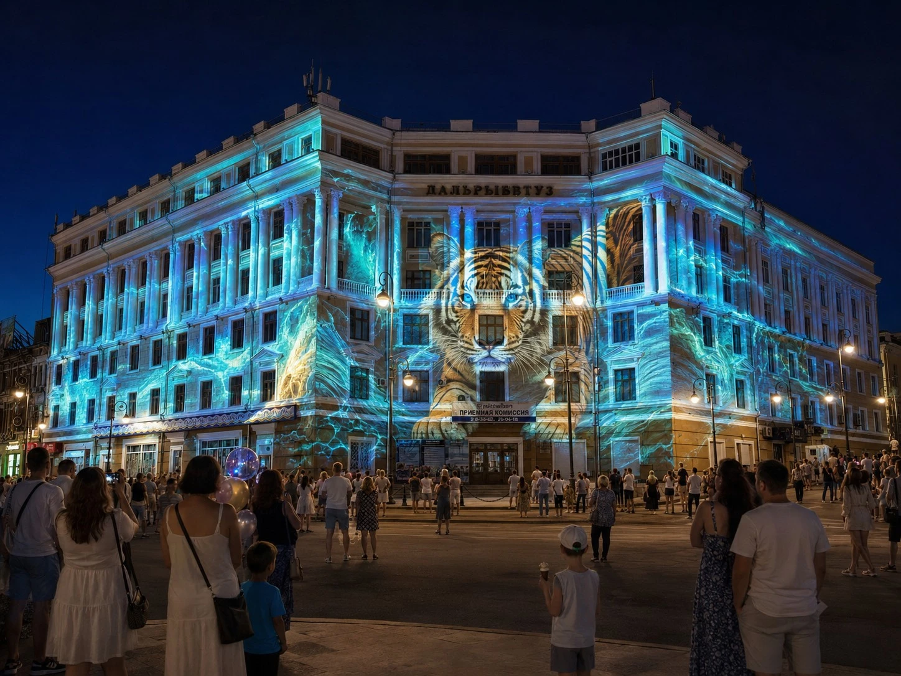

Лекции
Разобрать партитуру одного фасадного фильма. Где появляется первый образ, как окна задают ритм и в какой момент вступает звук бухты?


От фасадов Владивостока до воды. Маршрут по городу, где художники работают со светом, звуком и архитектурой.
Исследовать маршрут
Владивосток · Планируемые даты
Выберите точку на карте Владивостока. Городские площадки предложены для обсуждения.
С берега видна низкая баржа. Над ней поднимаются три веера воды. По струям проходит световая волна, собирается в силуэт кита и рассыпается в брызгах.


Референс водных экранов — «Парк света» студии MYSTIC.

Моушн-дизайнеры и студии создают работы под архитектуру Дальрыбвтуза. По плану, 8–10 финалистов покажут на фасаде фильмы длительностью 3–4 минуты.
План предусматривает открытый приём заявок, отбор жюри и работу финалистов с технической маской и 3D-моделью фасада. Срок подачи, регламент и призовой фонд уточняются.
Предварительный сценарий · местное время Владивостока
Дневной образовательный кластер для художников, студентов и зрителей.
Разобрать партитуру одного фасадного фильма. Где появляется первый образ, как окна задают ритм и в какой момент вступает звук бухты?
Собрать короткую сцену по маске здания и проверить её на макете. В отдельной лаборатории — попробовать AI-инструменты для движущихся фактур.
Обсудить, как портовый город становится выставочной площадкой. За одним столом — взгляд художника, архитектора, горожанина и куратора.
Темы предварительные. Расписание и состав спикеров уточняются.